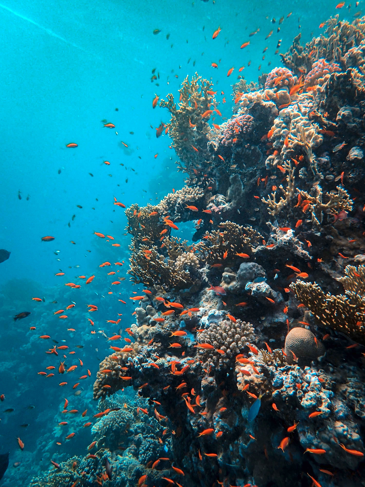
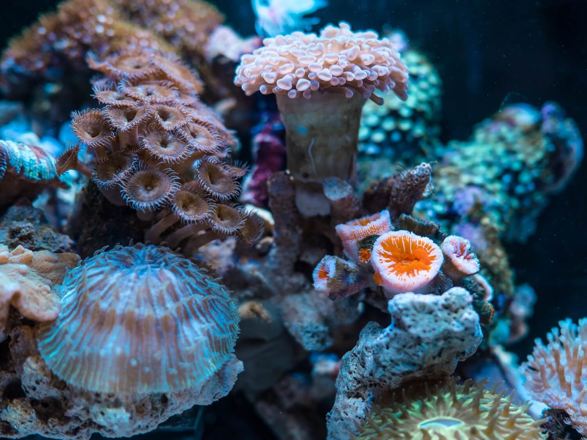
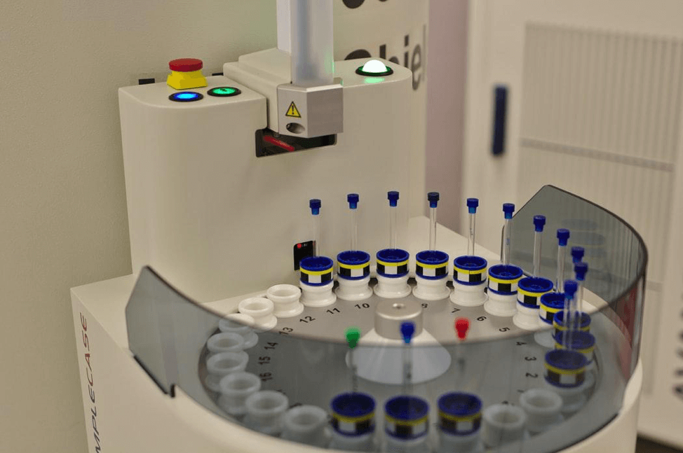

Samples taken from Hawaii’s coral reefs and analysed using biochemical
profiling have revealed that a devastating disease linked to human
activity is degrading tropical reefs by disrupting coral metabolism.
Home to over a quarter of the world’s marine life, coral reefs are
some of Earth’s most diverse and beautiful ecosystems. Some 1500
species of fish, 4000 mollusc species and six of the seven sea turtle
species rely on these innate and complex underwater structures for
shelter, food and protection. Corals also provide homes for animals,
offering them a safe space to reproduce and raise their offspring,
similar to protective mangrove forests and seagrass beds, which act
as nurseries for young aquatic organisms.

Coral reefs are the ocean’s most biodiverse ecosystems. | Francesco Ungaro / Unsplash
The vital role of coral reefs is not only limited to aquatic life,
however. Aside from the vast revenue from fishing and recreational
opportunities, coral reefs provide coastlines with crucial protection
against storms, tsunamis and erosion, by reducing the power of the
waves by 97%.
Additionally, with the rise of antibiotic resistance and an increasing
amount of medications becoming less effective over time, pharmaceutical
scientists have extended their search into the ocean for new treatment
methods. Coral reefs, in particular, have become a ‘research hotspot’
in the search for novel compounds which can be extracted to develop
medical drugs. Extracts from some reef-inhabiting plants and animals
have already been used in successful pharmaceutical products which have
treated asthma, cancers and heart disease.
Despite the ecological enrichment and socio-economic support these
organisms provide, corals are under significant threat. Whilst some of
these risks are natural, such as those from predation, storms and
disease, the most drastic threats have been attributed to human activity.
Sedimentation, unsustainable fishing practices, chemical pollution and
climate change are causing disease, reducing calcification rates and
inducing stress in coral colonies. These stresses often contribute to
stunted development, bleaching, physical damage and coral death.

Due to their medicinal potential, coral reefs have been
dubbed “medicine chests of the sea” | Jimmy Change / Unsplash
A recent discovery has linked growth anomalies (GAs), a disease
laguing coral reefs in Hawaii, with destructive human activity. These
tumour-like lesions result in irregular growth of the coral skeleton
and soft tissues, such that the coral structure becomes less dense and
porous.
Although GA incidence has been linked with human activity, the exact
cause, as well as the pathology and transmissibility between corals,
remains elusive. In order to investigate the impact of the lesions on
diseased coral colonies, a team of scientists consisting of researchers
from the National Institute of Standards and Technology (NIST), the
U.S Geological Survey (USGS) and the National Oceanic and Atmospheric
Administration (NOAA), set out to image the metabolic effects of the
disease in a population of Hawaiian Island coral reefs with a high GA
prevalence.
In addition to becoming degraded, diseased corals also have a reduced
capacity to reproduce, as scientists have observed fewer polyps and
endosymbiotic microorganisms than in healthy areas. Coral reefs consist
of hundreds to millions of these soft-bodied organisms, which live in
colonies and secrete calcium carbonate to form a hard, protective skeleton.
Shallow water corals, such as stony corals, retain their nutrients via
a mutualistic relationship with zooxanthellae, a type of photosynthetic
algae which reside within their tissues. Whilst GAs are not typically
fatal, they do diminish the overall health and resilience of the
affected colonies.
Coral sampling was carried out in the Hawaiian islands | Jad Limcaco / Unsplash
The team began by collecting 45 samples of a type of stony coral, known
as ‘finger coral’ or Porites compressa (P. compressa). Samples
were collected from three groups: coral diseased with GAs, non-diseased
coral from the same colony, and non-diseased coral from the nearest,
but distinct, colony.
The coral soft tissue samples were studied using proton nuclear
magnetic resonance (1HNMR) analysis. HNMR spectroscopy uses
electromagnetic fields and radio frequencies to measure and determine
the structure and metabolites of the corals on a molecular level with
a high degree of accuracy. Coral metabolites can be defined as the
intermediate or end-products of the process of coral metabolism and
were extracted from the samples using a combination of methanol, water
and chloroform.
The team managed to identify eighteen different metabolites in total,
with an increase in the overall metabolic activity in areas of coral
with GAs. According to the researchers, this increase in activity may
be indicative of an irregular metabolism caused by GAs, which promotes
rapid lesion growth at the expense of other surrounding, healthy tissues.
Interestingly, the findings also revealed that GA-infected corals tend
to display a reduced pH and a porous and fragile GA skeleton, which
the team hypothesised was due to a reallocation of the energy—ordinarily
used to regulate pH towards facilitation of the growth of GA tissue.

NMR samples being processed in a laboratory | Chromatograph / Unsplash
Since this revolutionary research methodology has never before been
used to study coral disease in situ, the findings from the team offer
a unique and novel insight into the biochemistry of GAs within
P. compressa, which may well be applicable to many more
varieties of coral in the tropics besides the stony variety.
The findings have exciting potential in the field of ecology and
conservation, as by giving an overview of the pathophysiological
factors which contribute to GA progression the researchers have likely
laid a foundation upon which future research will be based, hopefully
giving rise to a deeper and more comprehensive understanding of coral
disease.
Furthermore, should this be achieved, researchers might be able to
pinpoint exactly how human activities are contributing to such a
devastating occurrence, and make suggestions for how reactive efforts
can be made to protect and preserve coral reefs for future generations.
Unless we start to adopt a mindful attitude towards these diverse
marine invertebrates, there is a real and frightening risk that marine
species will go extinct, human illnesses will go untreated and coastal
areas will be submerged forever.
Featured Image: Francesco Ungaro | Unsplash
Andersson, E., Stewart, J., Work, T., Woodley, C., Schock, T. and Day, R., 2020.
Morphological, elemental, and boron isotopic insights into pathophysiology of diseased coral growth anomalies.
Scientific Reports,
10(1).
Andersson, E., Day, R., Work, T., Anderson, P., Woodley, C. and Schock, T., 2021.
Identifying metabolic alterations associated with coral growth anomalies using 1H NMR metabolomics.
Coral Reefs.
Kelly, L., Heintz, T., Lamb, J., Ainsworth, T. and Willis, B., 2016.
Ecology and Pathology of Novel Plaque-Like Growth Anomalies Affecting a Reef-Building Coral on the Great Barrier Reef.
Frontiers in Marine Science, 3